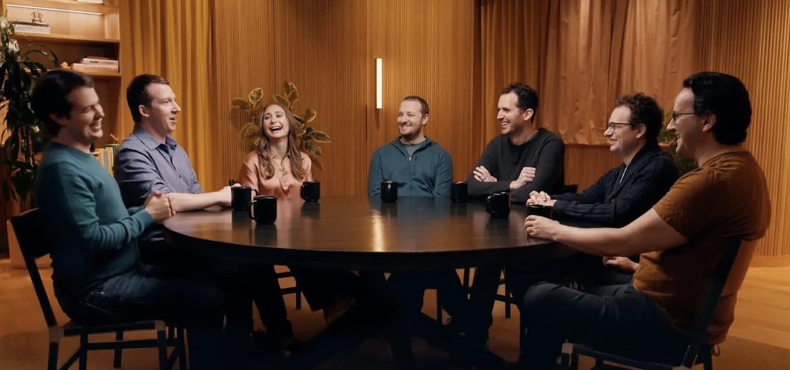

【引言】过去 14 个月，Anthropic 的 ARR 从 $1B 涨到 $30B+、26 年以来高频连续发布了几十个产品功能。但最近我们发现，按PM负责人访谈里的说法，原来全公司 PM 只有几十人，且几乎不靠 PRD 推进。好奇，他们的产品到底是怎么的「长」出来的？（图为七位联创）
研究方法：信息基于公开信息、Anthropic 官方博客、高管公开各渠道的发言（Lenny's Podcast、Dwarkesh 等）、官方招聘 JD 和权威媒体报道整理。所有引用标注来源编号，完整列表见参考资料。Claude Coworke & Codex 主要贡献为资料收集、制图、coding和审稿并给出修改意见。
PART 01: 团队组织演化主线
Anthropic 从 50 人长到 5,300 人，组织发展大致经历了 5 个阶段。我们重点关注其中的一条线：现在的PM × Research 是如何从一个岗位试点，变成公司层面的组织安排的。
1.1 五个阶段一图速览
1.2 PM × Research 工作模式是怎么演变出来的
下面这条时间线只列五个和 PM × Research 直接相关的节点。Mike Krieger（前 Instagram 联合创始人、Artifact 创始人）2024.05 加入 Anthropic 任 CPO；三个月后，Catherine Wu（前 Princeton CS、Scale AI、Dagster、Index Ventures合伙人）加入，成为首位 Research PM。从 Mike 到任算起，这套分工大约用了 20 个月，从内部试点探索、变成公司层面的组织设计方式。
1.3 当前组织架构与展望
下面是 Anthropic 2026 上半年的组织结构（阶段四"双轨成型"），以及阶段五 IPO 与全球化的展望。
展望 · 阶段五 · IPO 与全球化（2026 H2）
根据2026.04 TechCrunch 报道，Anthropic 收到多个意向，可能再融 $50B、估值 $850–900B[31]；eWeek 同期也报道，潜在 IPO 估值上限约 $630B[32]。虽然两个数字均为媒体报道且口径不同：前者是一级市场意向，后者是公开市场预估，但发展势头由此可以见一斑。
按照目前的规划，如果东京、班加罗尔、首尔、悉尼等地招聘顺利开展、全球化继续推进。在新的阶段，也许会遇到新的问题：比如IPO 之后的利润压力，会不会削弱"使命驱动"？组织出海之后，这样的用人方式和企业文化还能不能保持一致？
PART 02: PM × Research 和行业做法的区别
大多数 AI 公司里，PM 和 Research 各管一摊：研究负责把模型变强，产品负责在 API 外面做体验。Anthropic在AI行业摸索的过程中，选择把两种职能逐渐融合在一起。
2.1 串行瀑布流：行业默认
大多数 AI 公司里，研究团队和产品团队是分开的。研究关心模型有没有变强、能不能发论文；产品关心模型在生产环境里好不好用、能不能留住用户。两边的考核指标不一样，工作环境也不一样。[11][12]
研究团队
指标看模型准确率、论文数量、技术新颖性
问的是"能不能做出更强的模型"
实验环境独立，离用户很远
产品团队
指标看用户量、稳定性、收入
问的是"这东西在生产环境跑得动吗"
等研究交付 API，在外面搭一层 UX
这种分工带来一个后果：研究和产品之间的工作必须排成一条流水线。研究做完模型，工程包成 API，产品在 API 之上做界面，发布给用户，用户反馈再写成报告递回研究手里。整条链路下来，反馈传到研究通常已经是几个月以后。Thoughtworks 在 ML 工程报告研究中提出：当一个项目要跨多个团队串行协调时，总耗时会比单团队完成长 10 到 12 倍。[13]
2.2 让 PM 嵌入 Research 是怎么实现的
两条腿走路的内部实验
2025年，Anthropic的CPO Mike Krieger 与 OpenAI 的CPO Kevin Weil 同台对谈。当时Mike提到 Anthropic 内部在做一个小实验：把一部分 PM 同学，嵌入模型 Research 团队，和研究员一起改进模型本身；另一部分 PM 同学保持在原产品 / UX 团队，优化交互体验。实验发现，几乎所有的高价值的创造，都来自前一种协作模式。
Mike Krieger 后来回看这件事时说："25 年 Summit 对谈，那时候我其实没那么确定，现在我非常确定。"这个坚定态度的转折点，他说来自对产品经理工作价值的判定标准，清楚了：
"这个产品，任何人拿现成 API 都能搭出来吗？"如果答案是"能"，Anthropic 就没必要自己做。真正值得它投入的，是处在"模型能力 × 产品形态"交叉点上的产品：这种产品必须从 post-training 阶段就开始介入，不能等模型训完了再"套 UI"。
Anthropic 的实践：把所有人放进同一个房间
Mike Krieger 回想，自己出任 CPO 之后做的最重要的决定："是把几乎所有产品资源都从：在公开 API 之上搭 UX，转向产品和研究团队坐在一起做事"，他现在认为这种嵌入式协作能带来 10 倍的影响。[3]
具体做法主要有五个。
2.3 两种做法的对比
| 维度 | 串行瀑布流 | Anthropic 的做法 |
|---|---|---|
| 研究和产品的关系 | 分两个团队，按阶段交接 | PM 直接进研究团队，一起决定训什么 |
| 用什么语言沟通 | 产品讲用户故事，研究讲技术指标 | Evals：双方看同一份测试结果 |
| 有没有专门的中间人 | 没有，靠 PRD 和会议 | Research PM，懂研究也懂产品 |
| 反馈多久回到研究 | 3 到 6 个月 | 大约 10 分钟一条 |
| 试错的成本 | 高，要走完整个发布流程 | 低，Research Preview 当天可上线 |
| 功能性工作单元 | 产品交付 | 研究-产品的双向回路 |
| 人才留存 | 差异较大 | 约 80%，行业较高水平 |
Anthropic 没把重点放在优化流程上，它更关心怎么减少需要交接的地方。五项做法单独看都不夸张，放在一起，"协调"这件事就少了很多。
2.4 PM 嵌入 Research，实际嵌入的是两层
"PM 嵌入 Research"这句话容易被误解成：PM 直接参与模型架构、训练算法或研究路线。更准确地说，PM 进入的是模型能力形成过程中的两个相邻层：Harness 脚手架层和 Model Behavior 模型层。（这不是 Anthropic 官方组织图里的层级，是尝试理解 PM × Research 模式的分析切面。）
| 层级 | 它回答的问题 | PM 和 Research 一起处理什么 |
|---|---|---|
| UX 层 | 用户看到什么、怎么用 | 入口、界面、交互、工作流呈现 |
| Harness 脚手架层 | 模型如何在场景里工作 | 工具、运行、记忆、状态、任务拆解、Evals、反馈闭环 |
| Model Behavior 层 | 模型应该形成什么稳定行为 | 确认边界、不确定性表达、错误恢复、遵守规范、避免 reward hacking |
Harness 层是 PM 最直接的主战场。以 Claude Code / Cowork 这类产品为例，问题不只是"做一个开发者工具"或"做一个桌面助手"，而是要定义模型能访问哪些文件和工具、如何读取上下文、如何规划多步任务、如何运行测试或检查结果、如何判断任务完成，以及失败后如何继续。这些都不是传统意义上的 UI，而是把一个真实职业工作场景装进模型运行时的一套系统。
Model Behavior 层则是从这些场景里反推出来的。代码编写、桌面代理和企业工作流实际情况下，都会暴露一批模型行为问题：比如模型是否先读上下文再行动，是否在高风险操作前请求确认，失败后能否恢复或解释，是否能区分"我知道"和"我猜测"等。这些问题表面上是产品体验，实际上会进入 Evals、tool-use 策略和 post-training 讨论。
Research PM 的价值，不是把用户需求翻译成 PRD，而是把真实工作场景翻译成模型可运行、可评估、可训练的系统。先在 Harness 脚手架层定义工作环境，再通过 Evals 和用户反馈，把行为缺口推回 Model Behavior 层，这才是"产品和研究坐在一起"真正产生杠杆的地方。
PART 03: PM × Research 运作的真实实践
Part 2 我们对比了两种路线，也补了一层 Harness / Model Behavior 的解释框架。Part 3 落回到 Anthropic 内部，看它实际是怎么运转的：把五项机制逐条拆解、用Artifacts 和 Memory 两个案例、PM 和研究员意见冲突时谁拍板等实际情况，探索什么样的 PM 才能发挥出超高价值。
3.1 五项机制逐项展开
经过Mike Krieger入职后的调整，产品团队不再只等模型 API 交付，而是开始更早进入研究和 post-training 环节。[3] 与此同时 Mike Krieger 保留了 Anthropic 的 bottoms-up 文化：比如Artifacts 和 MCP 都不是 PM 立项的推动的，而是研究员和工程师自下而上推出来的。
机制一 · PM 直接进研究团队
机制一讨论的是 Research PM 的位置变化：PM 从研究链路外部，进入训练决策现场。[3]
Mike认为，真正能拉开差距的产品，往往来自对模型能力的深度参与，PM 必须在训练阶段就在场。Anthropic 内部有一个具体角色承接这件事：Research PM。Catherine Wu（2024 年 8 月加入，首位 Research PM，前 Princeton CS、Scale AI、Dagster、Index Ventures）是这个角色的样板。她自己搭过 RL 训练环境，这在传统公司里通常不属于 PM 的工作。她解释过：当你需要和研究员讨论"这个能力该训进去吗""需要多少数据"，如果没亲自跑过训练，就只能靠转述。[5]
机制二 · Evals 作为协议（不只是测试集）
大多数公司里 Evals 是 QA 的工作。Anthropic 把它变成 PM 和研究员之间的沟通协议。Catherine Wu说："Evals是被严重低估的，每个 PM 和工程师都应该会写。"[6]
他们的做法是：当一个产品方向不确定时，PM 先写 5 到 10 个 Evals 跑一遍，"通过/失败"的具体结果，作为整个团队讨论的起点。
Anthropic 内部的 Evals 分三类：
- 端到端——在 SWE-bench 上发现回归
- 触发式——判断这次查询是否应该触发联网搜索
- 能力——数据科学、重构等任务，有标准答案
Evals 把 PRD 里那些"这个功能应该满足……"的需求，改写成机器可以执行的判断。产品和研究团队的冲突解决也因此有了抓手：研究员可以看着失败案例直接说"这个我能加进训练"，或者"这个超出能力范围"。为此，公司专门设了高薪岗位在维护这套Evals基础设施：TPM Model Evaluations（$290K-$365K）、EM Agent Prompts & Evals（$320K-$405K）。
机制三 · Research PM 这个岗位角色人才要求很高
Catherine Wu 描述 Anthropic 的 Research PM岗位说："要连接研究团队和真实客户，收集模型反馈，跑 evals，找到可信的基准，推动模型发布。"[5] 这里的 Research PM 既不像传统 PM（不写 PRD），也不像研究员（不发论文），但两边都得懂。
他们认为，当需要和研究员讨论"这个能力该训进去吗""需要多少数据"时，如果PM没亲自搭 RL 环境、跑 evals、看 trace、跑训练，他就只能靠描述。这样做不是要抢研究员的活，是为了坐到训练决策桌边时，能说出有分量的观点。
机制四 · 反馈跑得非常快
Anthropic 设了 Product Operations Manager, Feedback Loops 这个专门角色，负责把全公司各种产品（API、claude.ai、Claude Code）的用户反馈接入统一系统。[6]
- Claude 自己驱动管道，自动会加标签、归类、聚合
- 1,000 多名员工自愿加入 Claude Code 反馈频道
- 平均每 10 分钟就有一条新反馈提交
- 团队明确在所有场合、向所有人说："我们喜欢负面反馈"
且反馈最后会逐渐变成训练优先级里的具体条目，而不会躺在季度总结报告里。
3.2 新协作机制运行的实际案例
拆开两个案例看看"研究和产品坐到一起"的真实情况。
Artifacts × Claude Code Skills 配对
Artifacts 是 Claude 在对话中直接生成并展示富交互内容（网页、SVG 图表、交互式组件、代码演示等）的功能。2024 年由研究员和工程师一起，自下而上推动发布，后来成为 Anthropic 最成功的产品之一。[3]
协作方式是：研究侧的 Claude Code Skills 小组（专门做 post-training，教 Claude 掌握特定技能）和产品团队配对，两边坐在一起干活。Skills 小组在 post-training 阶段做定向微调，让模型学会判断哪些内容适合用 Artifacts 呈现、生成更复杂的交互式组件，并在用户修改需求时维持内容一致性。产品团队同步提供使用数据和用户反馈，告诉 Skills 小组哪些场景需求最大、哪些交互模式用户最买账。两边没有prd和开会环节，就在同一轮训练周期里迭代。
差别在于：
老路
"我们用了模型，加了点 prompt"
产品团队拿现成 API，靠 prompt 调出想要的行为
新路
在 fine-tuning 流程里就把产品意图编码进去
产品形态和模型能力一起塑造
"光靠 prompt 早就不够了。我们必须进入 fine-tuning 的流程内部。"
— Mike Krieger[3]
Memory 评审会的小场景
Mike Krieger 在访谈中讲了一个产品评审会时发生的对话，透露出协作日常的真实状态：
- PM 主动找研究员是默认动作。
- 研究侧的 capability roadmap 和产品侧的 feature roadmap 是同步对齐的。
- Mike Krieger 衡量是否是"健康协作"的信号是：当我刚意识到要找研究员时，团队已经在沟通了。
来源：[3]
3.3 当 PM 和研究员意见不一致，谁说了算
这是"PM 嵌入研究"最容易出问题的地方。Anthropic 主要靠公开化来处理冲突，再用三个机制收束：
机制一 · Slack 公开辩论
有任何分歧直接在频道里吵，包括跟CEO吵。 Dario Amodei 和很多员工都有自己的公开Slack频道，分享产品思考、心得等等。Amol Avasare（增长负责人）说："人们就直接在 Slack 上跟 Dario Amodei 争论，他也回。"[8][21]
机制二 · 用 Evals 数据决定
当一方说"这个能力模型做不到"、另一方说"不行、客户必须要"，那就先去跑 Eval：
- 分数离目标 80% 以上 → PM 这边赢，做 prompt engineering 补差距
- 分数只有 10% → 研究员这边赢，等下一代模型
机制三 · 训练决策被当成产品决策
算力分配、post-training 选什么数据、要不要做客户专属模型，这些以前通常是研究负责人拍板的事。在 Anthropic，它们是产品和研究共同决策。PM 不只是提需求的人，也是这个决策圈的成员。
3.4 Anthropic PM 长什么样？
Mike 说："这是一种新的工作方式，不是所有 PM 都能掌握。"[3] 他说自己在产品评审时，能很快看出哪些 PM"对路"与否。下面分三块看：PM 画像、招聘信号、时间精力的分配。
"做得好" vs "不对路"的 PM 画像
✅ "做得好"的 PM（Mike Krieger 说的硬指标）
知道研究在做什么——能脱口说出本季度 post-training 在加哪些技能
介入时机更早——在能力 spec 阶段就提产品需求，而不是等模型 release
反馈能回到训练——把产品里收集到的失败案例形成 eval / 数据，流回训练
研究和工程的正反馈——研究员愿意继续和这个 PM 对话
⚠️ "不对路"的 PM（隐含画像）
把模型当黑盒——只在 release 后才讨论 UX
提的功能 prompt 就能解决——其实没有用到模型本身的特殊行为
不知道下一代能力路线——做的产品在下一次模型升级后立刻被淘汰
研究员逐渐回避对话——开会时被绕开
一个 Research PM 的一周
招聘的三个筛选信号
Catherine Wu 说过一句被到处引用的话："我们宁愿招一个有产品品味的工程师，也不愿意再招一个 PM。"[6] 这个意思具体落到 Anthropic 招 Research PM 的标准上：
另一个现象也很有意思：Anthropic 内部 PM 数量比同等规模公司少一半以上。Catherine Wu 说他们有一个"两周规则"：少于两周能做完的项目，不需要 PM 参与。且更大的项目反而要配更多 PM，而不是更少。 当写代码成本接近零的时代，真正稀缺的变成了"决定写什么"，PM 就应该把精力放在判断上。
PART 04: 关于 AI 公司组织协作的延伸思考
前面三部分拆解了 Anthropic 的产品和研究团队协作机制。下面我们斗胆尝试：和中国最优秀的组织字节做个对照，来推演下这种方式可能会哪里出问题。（说明：信息来源公开报道等引用。）
4.1 与 ByteDance 的 AI 组织不同
字节跳动 Seed 团队成立于 2023 年，到 2026 年初已经是字节 AI 版图里的重心。Seed 自己约 2,000 多人，加上 Flow、Stone、火山引擎，字节 AI 整体规模和Anthriopic不相上下。+。[23][24] 字节走的是和 Anthropic 不一样的路线：研究归研究，产品归产品，分成几块各做各的，中间通过模型版本和 API 衔接。
4.2 从招聘 JD 看两家公司的分工
对照 Anthropic 的 Research PM、TPM Model Evaluations 这些岗位，Seed 公开招聘 JD 呈现的是另一种分工：研究员和工程师是主力，PM 这个角色相对没那么吃重。[26][27]
| Seed 主要岗位 | 核心职责 | 定位 |
|---|---|---|
| 大模型研究员 / Research Scientist | 预训练、RL、推理优化、多模态 | 纯研究，论文是重要考核（2025 年顶会发表 60 篇） |
| 大模型应用研究员 | 面向产品场景的模型调优、SFT、Eval 设计 | 偏向应用，但仍然在研究序列里 |
| 对齐研究员（严林团队） | RLHF、安全偏好、合规对齐 | Seed 内部的子团队，不是独立组织 |
| Research Engineer / 研究工程师 | 训练框架、推理引擎、Infra 工具链 | 支持研究员，偏工程 |
| AI 产品经理（豆包/扣子/火山） | 定义产品形态、做用户研究、跨团队协调 | 在 Flow / Stone / 火山引擎里，不进入 Seed |
| Top Seed 研究实习生 | "自主决定研究课题，和正式员工同等权限和资源" | 每年招约 30 位顶尖博士，公司说"找前 5% 的人做 95% 做不到的事" |
最直接的差别是：Seed 内部没有 Anthropic 那种 Research PM 中间人角色。PM 主要在 Flow（豆包）、Stone（扣子和 Trae）、火山引擎里，位于 Seed 下游。两边通过模型 checkpoint 这个标准化交付物衔接，更接近传统的研究→产品流水线。应用研究员算是中间缓冲层，但整体上，研究和产品的边界比 Anthropic 清楚得多。
flowchart LR
subgraph SEED["🔬 Seed · 研究层"]
R1[预训练 / RL]
R2[多模态 / 世界模型]
R3[对齐 严林组]
R4[AI Infra]
end
SEED -->|模型 checkpoint
doubao-seed-2.0| FLOW
SEED -->|API + 微调底座| STONE
SEED -->|开放模型 + 推理优化| VE
subgraph FLOW["🚀 Flow · C端产品"]
F1[豆包 App
1亿+ DAU]
F2[即梦 / 猫箱]
end
subgraph STONE["🛠️ Stone · 开发者平台"]
S1[扣子 Coze
Agent 平台]
S2[Trae
AI 原生 IDE]
end
subgraph VE["☁️ 火山引擎 · B端"]
V1[火山方舟 MaaS]
V2[企业 API]
end
FLOW -.用户行为日志.-> SEED
STONE -.开发者反馈.-> SEED
VE -.企业场景需求.-> SEED
style SEED fill:#fdecea,stroke:#d93025,stroke-width:2px
style FLOW fill:#fdf6f5,stroke:#b04138
style STONE fill:#fdf6f5,stroke:#b04138
style VE fill:#fdf6f5,stroke:#b04138
两种判断各自有自己的考量
Anthropic 这边：相信研究和产品之间的边界越少越好。组织设计的力气，都花在让两边的人坐在一起、说同一种话、共用一套反馈系统上。代价是岗位边界变模糊，好处是反应快、对齐质量高。
ByteDance 这边：更相信标准化交付物。Seed 输出 checkpoint 和 API，下游板块各取所需。代价是反馈链条更长、跨板块协调有成本，好处是能同时服务三个完全不同的市场（消费者、开发者、企业），起势速度也不慢（豆包 DAU 一年破亿）。
两种做法似乎没有谁好谁坏，对应的也许是对外部环境的不同判断。Anthropic 押注单一前沿模型加深度对齐会成为未来主战场；ByteDance 押注中国市场、应用矩阵和端到端整合这条路。也许差别似乎更多来自"公司相信什么"，而不是"公司能做什么"。
4.3 Anthropic 模式可能遇到的风险
访谈里 Mike Krieger、Catherine Wu、Dario Amodei 给出了很多"我们做对了什么"的分享。但这套做法本身是有隐形的代价、规模化之后的风险，以及还没解决的张力，这些在公开材料里很少有人展开讲。
风险一 · 高度绑定一类特殊员工
招聘成本大大大增加。整个 PM × Research 协作机制对人的要求非常高：要会写代码、要有 model taste、要敢在 Slack 跟 CEO 吵架、要自己搭 RL 环境。类似Catherine Wu 是这种画像的代表，但她的简历不是常态。多年工程师 + 产品 + 短期 VC 经历，刚好踩在三个圈子的交集。
问题是：当公司从 5,300 人再涨到 1 万、2 万人，能持续招到 50 个 Catherine Wu吗？如果招不到，要么降低标准让普通 PM 进来（机制会被稀释），要么保持标准但接受 PM 数量跟不上业务速度。近期大张旗鼓出来宣传他们的PM模式，是否也侧面说明招聘遇到了困难呢？
风险二 · 决策成本的平衡
"何时下场"的判断成本很高。Mike Krieger 给pm的判定标准是一个反问句："这个东西，任何人拿我们的模型都能做出来吗？"如果能，就不要 Anthropic 自己做；如果不能，而且需要模型本身出现特殊行为，才走 PM × Research 联合路径。“这个判断错一次的代价很大：做错了会浪费稀缺研究算力，没做则可能漏掉差异化机会。
另一个冲突点是算力如何分配："每一瓦特拨给客户产品的算力，就是一瓦特从纯研究里抠出来的。"PM 想让模型在某个客户场景上变强，研究员想让模型在通用能力上变强。两边在算力分配、训练数据选择、post-training 优先级上经常冲突。这种情况下Anthropic 的选择不是交给上级拍板，而是把冲突公开化。对人的“坦诚清晰”要求更高了。
风险三 · Slack 公开辩论文化，在更大规模下可能会退化
"员工直接和 Dario Amodei 在 Slack 上争论"这种文化，在 50 人、500 人甚至 2,500 人时是健康的。但当公司到了 10,000 人之后，可能出现两种退化：
- 少数 loud voice 在频道里高频发言，普通员工反而更不敢说话，公开辩论变成"几个人的话语权竞赛"
- 讨论被信息过载淹没，重要的分歧被埋在频道的历史里，决策和重要讨论变慢、变小了
这两种退化在 GitHub、Stripe 等公司都发生过，他们也都曾以 Slack 公开辩论文化著称。Anthropic 还没到那个临界点，但风险已经能看见。
风险四 · Labs 内部公司化是否说明主组织开始变重了
2026 年 1 月 Labs 公司化时，Mike Krieger 离任 CPO，以技术成员身份加入 Labs，由他和 Benjamin Mann 联合负责，直接向 Daniela 汇报。官方解释是"让最快试错的工作脱离正常产品节奏"。
但反过来读：如果主产品组织还能像 2024 年那样轻盈试错，为什么还需要 Labs 这个特殊编制？Labs 的存在，某种程度上也说明主组织开始变重。这套打法本身没问题，但规模带来的官僚化是任何组织都会遇到的事。Labs 是 Anthropic 给自己留的一道防线，还不能算最终解。
风险五 · Research Preview 的另一面是用户不满
Research Preview 让 Anthropic 的发布速度快到 1 天，对内部是巨大的杠杆。但站在用户视角，今天用得很顺的功能，下周可能下线、改动，或者收费方式变了。这种节奏对个人开发者还能容忍，对企业客户来说就是结构性问题：部署、合规、培训都需要稳定的产品形态。
Anthropic 现在用"主产品 vs Labs / Research Preview"的双轨制部分缓解这件事，但企业客户增长的速度比产品成熟的速度更快，这道矛盾会持续放大。
写在最后
读到这里你大概也发现了："PM 嵌入研究团队"不是成功的唯一主要原因，更像是一连串条件共同支撑下的结果。它依赖很多基础：自研的 SOTA 模型、"Evals 优先"的沟通文化、把训练决策当产品决策的共识、Slack 公开辩论、写代码成本接近零等等。少一样，PM 跟研究员坐得再近，可能也聊不到一块去。Anthropic 的组织内部协作和运转发展到今天，会不会是不是未来 AI 产品组织的主流形态呢，还是要交给时间和市场去持续回答。
参考资料
参考资料 A · 公司基本信息
以下内容补充七位联创背景、PBC / LTBT / RSP 治理结构、初始四大支柱。对研究 PM × Research 协作模式而言，这些是"为什么要这样设计组织"的底牌。
A.1 七位联创：从 OpenAI 出走
2020 年，OpenAI 的核心安全团队集体出走。Sam McCandlish 在七位创始人座谈会上回忆："我们中没有谁一开始就想创业，只是觉得这是一份责任。"[1]
两个决定奠定了 Anthropic 后来的组织选择：七位联创同股同权（外界曾警告"七个创始人一定会内斗"，Dario Amodei 后来说这反而成了公司力量的来源）；七人共同承诺把个人财富的 80% 捐给慈善。[1][2]
| 姓名 | 当前角色 | 来历 | 在 Anthropic 干什么 |
|---|---|---|---|
| Dario Amodei | CEO | 普林斯顿计算生物物理博士；前 OpenAI 研究 VP，主导 GPT-2/GPT-3 | 整体战略；与 Daniela 形成"研究 / 运营"双核 |
| Daniela Amodei | President | 前 OpenAI VP of Safety & Policy；前 Stripe 早期员工 | 管运营、人事、安全政策、合规；Labs 直接向她汇报 |
| Jared Kaplan | Chief Science Officer | 理论物理学家；与 Sam、Dario Amodei 合写"Scaling Laws"论文 | 主导 Constitutional AI——Claude 行为准则的底层方法 |
| Sam McCandlish | 首席架构师 / RSO | 斯坦福理论物理博士；前 OpenAI Research Lead | 2025.10 前任 CTO，现专注预训练 + 执行 RSP |
| Tom Brown | Core Resources 负责人 | MIT 工程硕士；GPT-3 论文第一作者 | 管 Claude 训练所需的全部算力基础设施 |
| Jack Clark | Head of Policy | 前 Bloomberg / The Register 记者；前 OpenAI Policy Director | 对外政策、安全发现公开、监管沟通 |
| Chris Olah | 可解释性研究负责人 | 未读完大学；前 Google Brain；机制可解释性方向开创者 | 从电路层面理解模型在做什么 |
A.2 治理结构：PBC + LTBT + RSP
PBC（公益性公司）不是标签，是法律强制约束——短期利润最大化从来不是合法选项。董事会有法定义务平衡股东利益与公共利益。LTBT（长期利益信托）作为独立监督层，确保公司忠实于公共使命，独立于任何单一股东或董事会成员。两层结构形成的效果：哪怕未来 IPO、引入大量机构股东，"使命驱动"也不会被稀释。
Tom Brown 把RSP（负责任扩展政策）比作 Anthropic 的"宪法"——在模型能力达到特定阈值时必须满足相应的安全条件才能继续扩展，是所有重大决策的指导框架。[1]
A.3 初始四大支柱（2021）
公司在成立早期确立四个职能领域。此时的"产品"几乎等同于"使 Claude 能够被使用"，没有独立的 PM 团队——这是后面 Catherine Wu / Mike Krieger 改造的起点。
A.4 关键人物时间线（按阶段）
| 时间 | 对应阶段 | 人物 | 角色·变化 | 背景 |
|---|---|---|---|---|
| 2021 | 创立期 | 七位联创 | 覆盖全部关键角色 | OpenAI 核心安全团队集体出走 |
| 2021 | 创立期 | Benjamin Mann | 早期成员 / Labs 创始人 | GPT-3 论文共同作者 |
| 2023 | 早中期 | Krishna Rao | 第一位外部高管 · CFO | 前 Airbnb 财务负责人 |
| 2024.05 | 早中期 | Mike Krieger | 加入任 CPO | Instagram 联合创始人 / Artifact 创始人 |
| 2024.08 | 早中期 | Catherine Wu | 第一位 Research PM | 前 Princeton CS · Scale AI · Dagster |
| 2024 | 早中期 | Jan Leike | 加入 · 对齐科学 | 前 OpenAI 超级对齐联合负责人 |
| 2025 | 规模化 | Mike Krieger | 把 PM×Research 从试点推为战略 | Lenny's Podcast 首次公开方法论 |
| 2025.09 | 规模化 | Vitaly Gudanets | CISO | 前 Netflix 安全负责人 |
| 2025.10 | 规模化 | Rahul Patil | CTO | 前 Stripe CTO |
| 2025 | 规模化 | Ami Vora | 产品负责人 | 前 Facebook / WhatsApp 产品 VP |
| 2025 | 规模化 | Amol Avasare | 增长负责人 | 冷邮件联系 Mike Krieger 加入 |
| 2026.01 | 双轨成型 | Mike Krieger | 离任 CPO → 技术成员加入 Labs | 与 Benjamin Mann 联合负责 · 向 Daniela 汇报 |
| 2026.01 | 双轨成型 | Ami Vora | 接任 CPO | 核心产品进入全球扩展模式 |
| 2026 H2 | 展望 | — | IPO + 全球化 | 东京 · 班加罗尔 · 首尔 · 悉尼 |
参考资料 B · Anthropic 相关 · 资料来源（[1]-[10]、[31]-[32]）
| # | 来源 | URL |
|---|---|---|
| [1] | 七位联创座谈会"Building Anthropic" | coinlive.com |
| [2] | Observer — The 14 Executives Now Driving Anthropic's Future (2026.04) | observer.com |
| [3] | Mike Krieger — Lenny's Podcast Ep.268 (2025.06) | lennysnewsletter.com |
| [4] | Benjamin Mann — Lenny's Podcast Ep.279 (2025.07) | lennysnewsletter.com |
| [5] | Catherine Wu — Product management on the AI exponential (2026.03) | claude.com |
| [6] | Catherine Wu — Lenny's Podcast (2026.04) | lennysnewsletter.com |
| [7] | Scott White — Building With AI 播客 (2024.08) | snipd.com |
| [8] | Amol Avasare — Lenny's Podcast (2026.04) | lennysnewsletter.com |
| [9] | Anthropic 官方公告"Introducing Labs"(2026.01) | anthropic.com |
| [10] | Dario Amodei — Dwarkesh / Fortune (2026.02) | fortune.com |
| [31] | TechCrunch — Anthropic could raise $50B at $900B valuation (2026.04.29) | techcrunch.com |
| [32] | NZ Herald — Kiwi Chris Liddell recruited ahead of Anthropic's $630B IPO (2026.01) | nzherald.co.nz |
参考资料 C · ByteDance / OpenAI / DeepMind / 行业相关（[11]-[30]）
| # | 来源 | URL |
|---|---|---|
| [11] | Why Complete Separation Fails in AI — FourWeekMBA | fourweekmba.com |
| [12] | Nalvin — The Future of Product is Integrated | nalvin.com |
| [13] | Thoughtworks — Effective machine learning | thoughtworks.com |
| [14] | MIT Technology Review — The two people shaping OpenAI's research (2025.07) | technologyreview.com |
| [15] | WebProNews — OpenAI's Code Red (2025.12) | webpronews.com |
| [16] | Superalignment 团队解散（多家综合报道，2024.05） | chinastarmarket.cn |
| [17] | Calvin French-Owen — 7 周一款新产品，OpenAI 到底有多卷 | baai.ac.cn |
| [18] | InfoQ — 没有 KPI，也能领先 OpenAI？ | infoq.cn |
| [19] | IT之家 — 谷歌大脑 DeepMind"婚后"貌合神离 | ithome.com |
| [20] | Beyond Model Power — Redefining AI Competition (2026.04) | phys.sabanciuniv.edu |
| [21] | Business Insider — People 'just argue with Dario' on Slack (2026.04) | businessinsider.com |
| [22] | Ken Priore — The move that made AI safety a competitive weapon | kenpriore.com |
| [23] | ByteDance Seed 官网（团队介绍 / 招聘 / 研究方向） | seed.ByteDance.com |
| [24] | 腾讯新闻 — 字节 Seed 架构再调整，朱文佳汇报线下调，转向吴永辉汇报 (2025.10) | news.qq.com |
| [25] | 知乎独家 — 字节 AI Lab 将全部并入 Seed | zhuanlan.zhihu.com |
| [26] | 字节跳动校园招聘 — Top Seed 大模型顶尖人才计划 JD | jobs.ByteDance.com |
| [27] | JoinByteDance — Research Scientist in Foundation Model (Seed - LLM - Model) | joinByteDance.com |
| [28] | 华尔街见闻 — 吴永辉接管字节 Seed 这一年 | wallstreetcn.com |
| [29] | chooseai — Flow、Stone…一文看懂字节的 AI 组织版图（2026.02） | chooseai.net |
| [30] | 每经网 — 六大技术板块曝光，字节跳动 Seed 全球招募百名大模型人才 (2026.04) | nbd.com.cn |
共约 30+ 个独立信息来源。Anthropic 部分以 Lenny's Newsletter / 官方播客 / Claude Blog 为主；字节部分以官网 JD、腾讯新闻、华尔街见闻、知乎独家、晚点等中文权威媒体为主。截至 2026 年 4 月 30 日。欢迎针对研究内容展开探讨，邮箱：idadujuan@gmail.com。